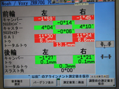

■シム調整式アライメント測定・調整
シム調整式アライメント測定・調整


【特殊シムによるリアキャンバー・リアトーの調整】
一般的にアライメントは車輌の各部に設けられた調整機能にて調整を行っています。
しかし車輌によっては各自動車メーカーが製造段階で調整機能を設けていない車輌も存在し、それらの車輌はアライメントの調整が不可能となります。そこで各パーツの調整機構の代わりに特殊シムを使用することでリア側のトー角・キャンバー角を理想的な数値に調整する方式がシム調整式なのです。
特にワゴン・ミニバンや軽CARには調整機能が存在しない車輌が多い為、ローダウン時のキャンバー角の付き過ぎによるタイヤの偏摩耗が多く見受けられましたが、シム調整により改善する事が可能です。
【シム調整とは】
シムとは構造物の隙間調整などに用いられるスペーサーなどを指します。シム調整アライメントでは、アライメント専用シムを車輌に装着する事でトー角・キャンバー角の調整を行います。アライメント専用シムはテーパー形状のスペーサーとなっており、装着角度によってアライメント調整が可能となっています。
KTSではシム調整にアメリカでNo.1のアライメント調整用パーツ販売実績を誇るSPC（スペシャルティプロダクツ）社のEZ-SHIMを使用しております。EZ-SHIMはTUV車輌安全規格品に認定されており、非常に高い精度・耐久性を誇ります。
■SPC社製 EZ-SHIM
認定試験合格
認定試験合格
原材料はポリアミド。強靭性・耐衝撃性に優れ、極限負荷での耐久試験・悪路試験・高温走行をクリアし、ドイツ試験機関TUV認証を取得しています。
◆
TUVとは欧州規格の中でも最も厳しい条件の課せられる自動車安全規格の最高峰に位置づけられています。独ニュルブルグリンクサーキットにて2,000kmに及ぶスポーツ走行テスト、海水による腐食テスト、せん断テスト、厳密なアライメント変化のチェックなど、過酷を極めた認定試験が行われます。
EZ-SHIMは全面接触のデュアルアングル、A面（表面）とB面（裏面）の2重構造となっております。
両面にテーパー角が付いており、それぞれ独立して自由に回転できる構造となっている為、1枚のシムでキャンバー方向・トー方向のそれぞれの傾斜角をスピンドルに与える事が可能となっています。
【シム調整とは】
・車輌基準値との誤差測定
車輌をリフトアップし、タイヤエアー圧の確認、各アーム類・ハブにガタや取付状態の不具合が無いかチェックします。その後、アライメントテスターを各ホイールへセットします。
※
KTSでは正確なアライメント数値を測定する為、定期的に作業リフトの水平測定を行っております。
※
KTSではBOSCH&HUNTER社製四輪赤外線テスターを使用しております。
・車輌へアライメント専用シムを装着
測定値を元にリア側のキャンバー角・トー角の変化量を計算し装着するシムの設定値を選択。
設定値決定後、リアアクスルナックルとバックプレートの間に装着します。
※
シム調整によるアライメント測定・調整はリア側キャンバー角・トー角のみとなり、その他の箇所については従来通り調整機構による調整となります。
・調整値の確認

調整シム装着後、アライメント測定を行います。
必要な場合は、再度シム装着角度の微調整を行い、理想の設定値に数値を近づけます。
※
KTSではアライメント調整終了後にステアリングセンターの点検・調整、各部の異音チェックの為、お客様のお車を試乗した上で納車しております。
【調整式キャンバーボルトによるフロントキャンバー調整（オプションメニュー】
ワゴン系にはフロント側のキャンバー調整機構が無い車輌が多く見られます。
これらの車輌は純正のキャンバーボルトを調整式キャンバーボルトに変更する事で調整が可能となる場合がございます。
KTSでは調整式キャンバーボルトへの変更をアライメント測定・調整作業のオプションメニューとしてご用意しております。
せっかく調整するのですから出来るだけ理想的なアライメントにセッティングしてみませんか？
【作業をご依頼頂く際の注意事項】
◆
お車に不具合・トラブルを抱えている場合はご予約時に必ずお知らせ下さい。特にアライメント調整時に関連する箇所のトラブルにおいては修理や対策を施してからの作業になってしまうと、作業当日のアライメント測定・調整が行えない場合がございます。
◆
アライメント測定・調整の作業料金・時間には車高調整やその他の作業は含まれておりません。アライメント測定・調整以外の作業をご希望の方は事前にご確認下さい。